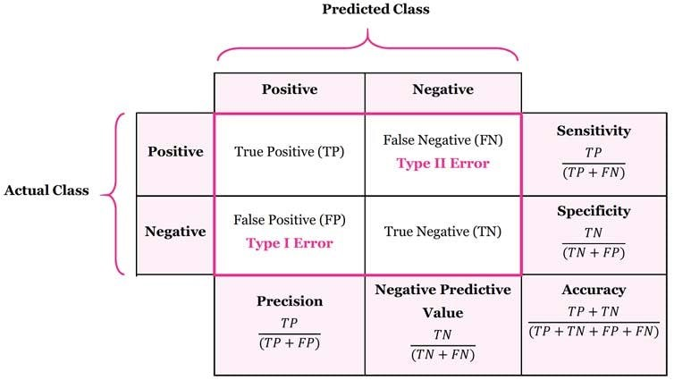

4 AI Quality Characteristics and Risks
4.1 ISO 25000-Series Software Quality Standards
The ISO 25000 series of standards defines software quality characteristics and sub-characteristics. These characteristics can be used to evaluate the quality of software, including AI systems. The main characteristics include:
Functional suitability: The degree to which the software meets the specified requirements and performs its intended functions.
Performance efficiency: The degree to which the software performs its functions efficiently, including response time, resource utilization, and throughput.
Compatibility: The degree to which the software can operate with other software, hardware, or systems.
Usability: The degree to which the software can be used by specified users to achieve specified goals with effectiveness, efficiency, and satisfaction.
Reliability: The degree to which the software can maintain its performance under specified conditions for a specified period of time.
Security: The degree to which the software protects information and data from unauthorized access, use, disclosure, disruption, modification, or destruction.
Maintainability: The degree to which the software can be modified to correct faults, improve performance, or adapt to a changed environment.
4.1.1 ISO 25059:2023 - Quality Model for AI-Based Systems
The ISO/IEC 25059:2023 standard extends the ISO 25000 series to specifically address the quality characteristics of AI-based systems. It introduces new and partially adapt existing characteristics and sub-characteristics that are relevant to AI, such as AI functional correctness, functional adaptability, user controllability, transparency, AI robustness, and intervenability. Additionally, it emphasizes the importance of societal and ethical risk mitigation in the context of AI systems. Major AI safety challenges, such as vague specifications, non-determinism, self-learning, limited explainability, and evolving standards, are also addressed, with an emphasis on their impact on testing and regulation. This standard provides a framework for evaluating the quality of AI-based systems and can guide the development and testing processes to ensure that these systems meet the necessary quality standards.
4.1.2 AI-Specific Quality Characteristics
The ISO/IEC 25059 proposes to evaluate AI-based systems from two perspectives: product quality and quality in use. From a testing perspective, these quality characteristics directly influence how test objectives are defined, how acceptance criteria are formulated, and how test results are interpreted for AI-based systems.
New and modified characteristics, compared to ISO/IEC 25010, include:
AI functional correctness (product quality): AI-based systems, especially those using probabilistic ML, cannot guarantee perfect accuracy. Since a certain error rate is expected in AI outputs, the concept of functional correctness has been adjusted accordingly. ISO/IEC 25059 evaluates functional correctness by considering both correct and incorrect outputs and by defining acceptable thresholds for incorrect results, reflecting the inherent variability in AI-based system outputs (see Section 8.4).
Functional adaptability (product quality): a new sub-characteristic of functional suitability. The ability of the AI-based system to autonomously adapt to changes in its operational environment after it is deployed.
User controllability (product quality): a new sub-characteristic of interaction capability (note that interaction capability is itself a new term that replaces usability in the 2023 version of ISO/IEC 25010). A property of an AI-based system such that a human or another external agent can intervene in its functioning in a timely manner.
Transparency (product quality and quality in use): a new sub-characteristic of interaction capability and a new sub-characteristic of satisfaction. It relates to the degree to which appropriate information about the AI-based system is communicated to stakeholders (see 6.1.2).
AI robustness (product quality): a new sub-characteristic of reliability. It describes the ability of an AI-based system to maintain its level of AI functional correctness regardless of circumstances, such as the presence of biased, adversarial, or invalid data inputs, external interference, adverse environmental conditions, and operator misuse.
Intervenability (product quality): a new sub-characteristic of security. The degree to which an operator can intervene in an AI-based system’s functioning in a timely manner to prevent harm or hazard.
Societal and ethical risk mitigation (quality in use): a new sub-characteristic of ‘Freedom from risk’. Considers many areas to mitigate societal and ethical risk, including accountability, fairness and non-discrimination, professional responsibility, promotion of human values, privacy, safety and security, human control of technology, community involvement and development, human-centered design, respect for the rule of law, respect for international norms of behavior, environmental sustainability, and labor practices.
4.1.3 AI and Safety
Safety-related systems have the potential to cause injury or harm to people, property or the environment. Developing and testing non-AI safety-related systems can take a lot of effort, but is feasible; however, for AI-based systems, there are several additional challenges:
Specifications: In traditional safety-related systems, requirements are defined for the complete system and refined until the developer can transform them into code. The requirements for many AI-based systems often begin with vague goals and are then implicitly provided via the training data that encodes patterns, rules, and objectives, without fully formalizing every detail upfront. This can mean that the necessary traceability from requirements to implementation is inadequate for AI-based systems.
Non-determinism: This characteristic of many AI-based systems makes it inherently challenging to guarantee the precise behavior of these systems. Even rigorously tested models can exhibit unexpected behavior due to factors such as random number generation or slight variations in input values.
Self-learning: Rigorous testing is used to demonstrate the safety integrity of a system before deployment. For self-learning AI-based systems, this is undermined as the system’s behavior progressively moves away from the originally tested behavior. Managing how the model learns and the data it uses can sometimes help to avoid the emergence of new problematic behaviors. Alternatively, safety guards can be implemented to help prevent the model from learning or making decisions that could compromise safety (e.g., a content moderation component to filter prompts).
Explainability and Transparency: For safety-related systems, it is essential to understand how and why the system makes decisions. However, the decision-making processes of AI-based systems are often not transparent. Explainable AI techniques, such as LIME (Local interpretable model-agnostic explanations), can provide insights into the AI-based system’s reasoning; however, they are not widely available and may compromise system performance.
Evolving Regulations: The regulatory landscape for safety-related AI-based systems is constantly evolving. The use of AI is currently not included in mature functional safety international standards, and some of these standards even prohibit its use in such systems. The EU AI Act [EU AI Act] (see 1.1.8) classifies AI systems used as safety components (such as in aviation, medical devices, or automotive) as high-risk and imposes strict requirements on their development and testing.
4.2 Acceptance Criteria for AI-Based Systems
This section outlines acceptance criteria related to the quality characteristics specified in the ISO/IEC 25059 standard, as well as safety. For AI-based systems, acceptance criteria often need to be statistical, probabilistic, or threshold-based rather than binary, which introduces additional testing challenges.
4.2.1 Acceptance Criteria for AI-Based Systems
When evaluating the quality of an AI-based system, it is essential to consider both functional and non-functional quality characteristics. This helps confirm that the AI-based system functions as intended and satisfies broader quality requirements. The ISO/IEC 25010 and ISO/IEC 25059 standards provide a comprehensive framework for defining software quality. In this section, the focus is on the acceptance criteria associated with the quality characteristics specific to AI (i.e., those defined in ISO/IEC 25059) and safety (see 2.1.2).
The following table lists example acceptance criteria for safety and each of the quality characteristics defined in the ISO/IEC 25059 standard.
|
Example Acceptance Criteria |
|---|---|
|
|
|
|
|
|
|
|
|
|
|
|
|
|
|
|
5 Detailed Preview on ISO/IEC DIS 25059:2026
This document was prepared by Joint Technical Committee ISO/IEC JTC 1, Information technology, Subcommittee SC 42, Artificial intelligence.
This second edition cancels and replaces the first edition (ISO/IEC 25059 :2023), which has been technically revised.
The main changes are as follows:
— alignment with the revised version of ISO/IEC 25010:2023;
— alignment with the revised version of ISO/IEC 25019:2023;
— addition of an AI service quality model based on ISO/IEC TS 25011:2017;
— addition of “Environmental sustainability” as a sub-characteristic of “Performance efficiency” in the product quality model.
2 Normative references
The following documents are referred to in the text in such a way that some or all of their content constitutes requirements of this document. For dated references, only the edition cited applies. For undated references, the latest edition of the referenced document (including any amendments) applies.
ISO/IEC 25010:2023 Systems and software engineering — Systems and software Quality Requirements and Evaluation (SQuaRE) — Product quality model
ISO/IEC 25019:2023 Systems and software engineering — Systems and software Quality Requirements and Evaluation (SQuaRE) — Quality-in-use model
ISO/IEC 22989:2022 Information technology — Artificial intelligence — Artificial intelligence concepts and terminology
ISO/IEC 23053:2022 Framework for Artificial Intelligence (AI) Systems Using Machine Learning (ML)
5.1 5 Product quality model
An AI system product quality model is detailed in Table 1. The model is based on a modified version of a general system model provided in ISO/IEC 25010. New and modified sub-characteristics are identified using a lettered footnote. Some of the sub-characteristics have different meanings or contexts as compared to the ISO/IEC 25010 model. The modifications, additions and differences are described in this clause.
The unmodified original characteristics are part of the AI system product model and shall be interpreted in accordance with ISO/IEC 25010. Each of these modified or added sub-characteristics are listed in the remainder of this clause.
Table 1 — AI system product quality model
| Functional suitability | Security |
|---|---|
|
Functional completeness |
Confidentiality |
|
Functional correctness m |
Integrity |
|
Functional appropriateness |
Non-repudiation |
|
Functional adaptability a |
Accountability |
| Performance efficiency | Authenticity |
| Time behaviour | Resistance |
| Resource utilization | Intervenability a |
| Capacity | Maintainability |
| Environmental sustainability a |
Modularity |
| Interaction capability |
Reusability |
| Appropriateness recognisability |
Analysability |
| Learnability |
Modifiability |
| Operability | Flexibility |
| User error protection | Testability |
| User engagement | Adaptability |
| Inclusivity | Scalability |
| User assistance | Installability |
| Self descriptiveness | Replaceability |
| User controllability a | Safety |
| Transparency a | Operational constraint |
| Reliability | Risk identification |
| Faultlessness | Fail safe |
| Availability | Hazard warning |
| Fault tolerance | Safe integration |
| Recoverability | Compatibility |
| Robustness a | Co-existence |
| Interoperability |
NOTE
a Added sub-characteristics.
m Modified sub-characteristics.
3.2 Product quality
3.2.1 user controllability
degree to which a user can appropriately intervene in an AI system’s functioning in a timely manner
3.2.2 functional adaptability
degree to which an AI system can accurately acquire information from data, or the result of previous actions, and use that information in future predictions
3.2.3 functional correctness
degree to which a product or system provides the correct results with the needed degree of precision Note 1 to entry: AI systems, and particularly those using machine learning models, do not usually provide functional correctness in all observed circumstances.
[SOURCE: ISO/IEC 25010:2023, 4.2.1.2, modified — Note to entry replaced.]
3.2.4 intervenability
degree to which an operator can intervene in an AI system’s functioning in a timely manner to prevent harm or hazard
3.2.5 robustness
degree to which an AI system can maintain its level of functional correctness under any circumstances
3.2.6 environmental sustainability
state in which the ecosystem and its functions are maintained for the present and future generations
[SOURCE: ISO 17889-1:2021, 3.1.1, modified — generation made plural.]
Added / Modified Subcharacteristics
5.4 Functional correctness
Functional correctness exists in ISO/IEC 25010. The AI system product quality model amends the description since AI systems, and particularly probabilistic ML methods, do not usually provide functional correctness because a certain error rate is expected in their outputs. Therefore, it is necessary to measure correctness and incorrectness carefully. Numerous measurements exist for these purposes in the context of ML methods and examples of these as applicable to a classification model can be found in ISO/IEC 4213.
Additionally, there can be a trade-off between characteristics such as performance efficiency[37], robustness[38] and functional correctness.
Annex C provides further information about why functional correctness is preferred to other terms such as the more general performance to describe the correctness of the model.
5.3 Functional adaptability
Functional adaptability is a new sub-characteristic of functional suitability. Functional adaptability of an
AI system is the ability of the system to adapt itself to a changing dynamic environment it is deployed in.
AI systems can learn from new training data, production data and the results of previous actions taken
by the system. The concept of functional adaptability subsumes that of continuous learning, as defined in ISO/IEC 22989:2022, 5.11.9.2.
Continuous learning is not a mandatory requirement for functional adaptability. For example, a system
that switches classification models based on events in its environment can also be considered functionally adaptive.
Functional adaptability in AI systems is unlike other quality characteristics as there are system specific consequences that cannot be interpreted using a straight-line linear scale (e.g. bad to good). Generally, higher functional adaptability can result in improvements for the outcomes enacted by AI systems.
For some systems, high functional adaptability can cause additional unhelpful outcomes to become more likely based on the system’s previous choices. Weightings of a decision path with relatively high uncertainty, reinforced based on previous AI system decisions, can result in higher likelihood of unintended negative outcomes. In this fashion, functional adaptability can reinforce negative human cognitive biases.
While conventional algorithms usually produce the same result for the same set of inputs, AI systems, due to continuous learning, can exhibit different behaviour and therefore can produce different results.
5.8 Environmental sustainability
The sustainability domain requires organization to consider three main areas, each with their own sustainability aspects:
— economic sustainability;
— social sustainability;
— environmental sustainability.
To date, the focus of AI practitioners has been mostly on environmental and social sustainability. Social sustainability is addressed in AI trustworthiness standards ISO 26000, ISO/IEC TR 24368, ISO/IEC TS 12791 and ISO/IEC 12792.
The environmental sustainability of AI systems affects many ecosystems in a complex manner. Organizations are only at the beginning of fully understanding and addressing these environmental sustainability aspects.
The environmental sustainability of AI is an emerging discipline. However, practitioners can find guidance with regards to the environmental sustainability of AI applications, AI ecosystems and the AI system lifecycle, as well as metrics to measure and manage certain aspects thereof, in the following standards:
— environmental sustainability aspects of AI systems, including ISO/IEC TR 20226;
— the life cycle assessment of an AI system, including ISO 14040, EC JRC life cycle assessment;
— methods for measuring resource usage, including software carbon-intensity, water usage, and energy usage, including ISO/IEC 21031;
— environmental management, including ISO 14001;
— methods for measuring and assessing the environmental impact of an AI system (including greenhouse gas emissions), including ISO 14064-1, ISO/IEC 21031, IEEE 1922.2, ITU-T L.1480;
— methods for a circular economy, including ISO 59020.
Depending on the stakeholder role of the user applying these standards, as well as the phase of the AI system lifecycle in which the standard is applied, what they measure will vary on a case-by-case basis. For example, a designer for an AI application can include requirements for software carbon intensity (SCI) as discovered through ISO/IEC TR 20226, a developer may implement it using ISO/IEC 21031, and an organization using the AI application can use the output of the metric in its greenhouse gas emission reporting.
ISO/IEC TR 20226 describes environmental sustainability aspects of AI systems.
5.6 Transparency
Transparency is sub-characteristic of interaction capability in the product quality model and a subcharacteristic of satisfaction in the quality in use model. It relates to the degree to which appropriate information about the AI system is communicated to stakeholders (see ISO/IEC 22989:2022, 5.15.8).
Transparency of AI systems can help potential users of AI systems to choose a system to fit their requirements, improving stakeholders’ knowledge about the applicability and the limitations of an AI system, and assisting with the explainability of AI systems.
The transparency information can include a description of an AI system functionality, the system’s decomposition, interfaces, ML models used, training data, verification and validation data, performance benchmarks, logs and the management practices of an organization responsible for the system.
Transparent AI systems document, log or display their internal processes using introspection tools and data files. The flow of data can be trackable at each step, with applied decisions, exceptions and rules documented. Log output can track processes in the pipeline as they permute data, as well as system level calls. Errors are logged explicitly, particularly in transform steps. Highly transparent AI systems can be built of well-documented subcomponents whose interfaces are explicitly described. The transparency of AI systems eases investigations of system malfunctions.
A system with low transparency has internal workings which are difficult to inspect externally. Unavailability of detailed processing records can impair testability and societal and ethical impact assessment and risk treatment.
Ultimately, transparency of AI systems contributes to establishing of trust, accountability and communication among stakeholders. Some aspects of transparency are discussed in ISO/IEC 12792 and ISO/IEC TS 6254.
5.5 Robustness
Robustness is a new sub-characteristic of reliability. It is used to describe the ability of a system to maintain its level of functional correctness (see Annex C for discussion on the term performance) under any circumstances including:
— the presence of unseen, biased, adversarial or invalid data inputs;
— external interference;
— environmental conditions encompassing generalization, resilience, reliability;
— attributes related to the proper operation of the system as intended by its developers.
The proper operation of a system is important for the security of the system and safety of its stakeholders in a given environment or context. Information about functional safety in the context of AI systems can be found in the ISO/IEC TS 22440 series (ISO/IEC TS 22440-1, ISO/IEC TS 22440-2 and ISO/IEC TS 22440-3).
Robustness is discussed in ISO/IEC TR 24028:2020, 10.7 and methods for assessment are described in ISO/IEC TR 24029-1 and defined in the ISO/IEC 24029 series (ISO/IEC 24029-2 and ISO/IEC 24029-3).
5.7 Intervenability
The extent of intervenability can be determined depending on the scenarios where the AI system can be used. The key to intervenability is to enable state observation and transition from an unsafe state to a safe state. Operability is the degree to which an AI system has attributes that enable operation and control, which emphasizes the importance of an AI system’s user interface. Compared to operability, intervenability is more fundamental from a quality perspective and is intended to prevent an AI system from doing harm or hazard.
Intervenability is related to controllability, which is described in ISO/IEC TS 8200 and ISO/IEC 22989:2022, 5.15.5.
5.2 Quality-in-use model
General
An AI system quality-in-use model is detailed in Table 2. The model is based on a modified version of a general quality-in-use model provided in ISO/IEC 25019. New sub-characteristics are identified using a lettered footnote. Some of the sub-characteristics have different meanings or contexts as compared to the ISO/IEC 25019 model. The additions and differences are described in this clause. The unmodified characteristics are part of the quality-in-use model and shall be interpreted as defined in ISO/IEC 25019.
Table 2 — AI system quality-in-use model
| Beneficialness | Risk mitigation |
|---|---|
| Usability | Economic risk mitigation |
| Accessibility | Environmental risk mitigation a |
| Suitability | Societal and ethical risk mitigation a |
| Acceptability | Health risk mitigation -> 25019 |
| Experience | Human life risk mitigation |
| Trustworthiness | |
| Compliance | |
| Transparency a |
NOTE
a Added sub-characteristics
6.2 Transparency
Transparency is also a sub-characteristic of satisfaction in the product quality model. See 5.6 for further information.
Environmental risk mitigation
degree to which a product or system mitigates the potential risk to the environment in the intended contexts of use
Note 1 to entry: environmental risk mitigation includes the mitigation of risks that could harm the environment, such as pollution, waste, and resource depletion. Additionally, it involves the product or system’s role in sustainability through the efficient utilization of resources, reduction of waste, and facilitation of recycling and reuse processes.
freedom from environmental and societal risk
extent to which a product (3.1.14) or system (3.1.29) mitigates the potential risk (3.1.22) to the environment and society (3.1.23) at large in the intended contexts of use (3.1.4)
Note 1 to entry: When a product or system is especially recognized as an information system (3.1.9) and IT service, there is concern the environmental and societal risk impacts on public properties in societies, and on environments including societal or natural ecology systems in a diverse and broad group of stakeholders (3.1.26) so that the risk monitoring used is often considered to be more focused in addition to risk mitigation.
6.3 Societal and ethical risk mitigation
Societal and ethical risk mitigation is a new sub-characteristic of risk mitigation. ISO/IEC TS 22443 explores this topic and outlines the following themes:
— accountability;
— fairness and non-discrimination;
— transparency and explainability;
— professional responsibility;
— promotion of human values;
— privacy;
— safety and security;
— human control of technology;
— community involvement and development;
— human-centred design;
— respect for the rule of law;
— respect for international norms of behaviour;
— environmental sustainability;
— labour practices.
These themes should be considered along with the information in ISO/IEC TS 224430F[1], with regard to the desirable characteristics of systems in order to mitigate societal and ethical risk.
Safety and security as well as sustainable environments are included within the existing SQuaRE characteristics health and safety risk mitigation, and environment risk mitigation, and therefore are not outlined in this document.
freedom from health risk extent to which a product (3.1.14) or system (3.1.29) mitigates the potential risk (3.1.22) to people’s health in the intended contexts of use (3.1.4) (from ISO 25019: Quality in Use Model: 3.2.2.3** )
freedom from human life risk
extent to which a product (3.1.14) or system (3.1.29) mitigates the potential risk (3.1.22) to people’s lives in the intended contexts of use (3.1.4)
5.3 7 AI service quality model
7.1 General
An AI service quality model is detailed in Table 3. The model is based on a modified version of IT service quality model provided in ISO/IEC TS 25011. New and modified sub-characteristics are identified using a lettered footnote. Some of the sub-characteristics have different meanings or contexts as compared to the ISO/IEC TS 25011 model. The modifications, additions and differences are described in this clause. The unmodified original characteristics are part of the IT service quality model and shall be interpreted in accordance with ISO/IEC TS 25011.
Table 3 — AI service quality model| Service quality | Service risk mitigation |
|---|---|
| Service performance | Service safety risk mitigation |
| Service reliability | Service security risk mitigation |
| Service availability | Service societal and ethical risk mitigation |
| Traceability a | |
| Service adaptability a | |
| Customizability a |
3.4.1 traceability
degree to which the AI service outcomes can be traced to or from the user needs
3.4.2 service adaptability
degree to which a service can be adapted based on factors such as functions, responsibility, skill of
employees, communication style with users or instruments available
3.4.3 customizability
degree to which the AI service can be customized at the request of users
7.2 Traceability
Traceability is a sub-characteristic of security. Traceability of AI systems includes proper logging and record keeping of models, data sets, requests and outcomes. For more information, refer to ISO/IEC 24970.
7.3 Service adaptability
Service adaptability is a characteristic of the AI service quality model. Service adaptability is influenced by digital instruments and analysis of digital transformation. Some suggestions and improvements can be derived from the introduction of AI systems.
Some adaptations can benefit optimizing interoperability of services, reduction of duplications, clarifying and adapting responsibilities of management and leadership.
Introducing measurements of efficiency and effectiveness of services can suggest further actions of adaptability.
7.4 Customizability
Customizability is a sub-characteristic of service adaptability. The data quality and data quantity are
examples of constraints that need to be taken into consideration when customizing an AI system.
6 ISO/IEC TS 4213:2022 Information technology — Artificial intelligence — Assessment of machine learning classification performance
Contents
Foreword….v
Introduction….vi
1 Scope….1
2 Normative references…1
3 Terms and definitions…1
3.1 Classification and related terms…1
3.2 Metrics and related terms…1
4 Abbreviated terms…3
5 General principles…4
5.1 Generalized process for machine learning classification performance assessment.4
5.2 Purpose of machine learning classification performance assessment.4
5.3 Control criteria in machine learning classification performance assessment.5
5.3.1 General…5
5.3.2 Data representativeness and bias..5
5.3.3 Preprocessing…5
5.3.4 Training data…5
5.3.5 Test and validation data…6
5.3.6 Cross-validation…6
5.3.7 Limiting information leakage…6
5.3.8 Limiting channel effects…6
5.3.9 Ground truth…7
5.3.10 Machine learning algorithms, hyperparameters and parameters.7
5.3.11 Evaluation environment…8
5.3.12 Acceleration…8
5.3.13 Appropriate baselines…8
5.3.14 Machine learning classification performance context..8
6 Statistical measures of performance…8
6.1 General….8
6.2 Base elements for metric computation..9
6.2.1 General…9
6.2.2 Confusion matrix…9
6.2.3 Accuracy…9
6.2.4 Precision, recall and specificity..9
6.2.5 F1 score…9
6.2.6 Fβ….9
6.2.7 Kullback-Leibler divergence…10
6.3 Binary classification…10
6.3.1 General…10
6.3.2 Confusion matrix for binary classification..11
6.3.3 Accuracy for binary classification..11
6.3.4 Precision, recall, specificity, F1 score and Fβ for binary classification.11
6.3.5 Kullback-Leibler divergence for binary classification..11
6.3.6 Receiver operating characteristic curve and area under the receiver operating characteristic curve..11
6.3.7 Precision recall curve and area under the precision recall curve.11
6.3.8 Cumulative response curve…12
6.3.9 Lift curve…12
6.4 Multi-class classification…12
6.4.1 General…12
6.4.2 Accuracy for multi-class classification..12
6.4.3 Macro-average, weighted-average and micro-average..12
6.4.4 Distribution difference or distance metrics..13
6.5 Multi-label classification…14
6.5.1 General…14
6.5.2 Hamming loss…14
6.5.3 Exact match ratio…15
6.5.4 Jaccard index…15
6.5.5 Distribution difference or distance metrics..15
6.6 Computational complexity…16
6.6.1 General…16
6.6.2 Classification latency…16
6.6.3 Classification throughput…17
6.6.4 Classification efficiency…17
6.6.5 Energy consumption…17
7 Statistical tests of significance…18
7.1 General….18
7.2 Paired Student’s t-test…18
7.3 Analysis of variance…19
7.4 Kruskal-Wallis test…19
7.5 Chi-squared test…19
7.6 Wilcoxon signed-ranks test…19
7.7 Fisher’s exact test…19
7.8 Central limit theorem…20
7.9 McNemar test…20
7.10 Accommodating multiple comparisons..20
7.10.1 General…20
7.10.2 Bonferroni correction…20
7.10.3 False discovery rate…21
8 Reporting….21
Annex A (informative) Multi-class classification performance illustration.22
Annex B (informative) Illustration of ROC curve derived from classification results.24
Annex C (informative) Summary information on machine learning classification benchmark tests….29
Annex D (informative) Chance-corrected cause-specific mortality fraction.31
Bibliography….32
7 CT-GenAI 2.3.1 Metrics for Evaluating the Results of Generative AI on Test tasks
[CT-GenAI 1.1] p.30f
Several metrics can be used to evaluate the quality and efficiency of GenAI results on a test task:
| Metric | Description | Example (for test generation task) |
|---|---|---|
| Accuracy | Measures the overall correctness of the generated output against expert-written test cases, requirements, or other standards. | The degree to which the generated test cases cover all specified requirements. |
| Precision | Evaluates the correctness of the generated output with respect to a specific objective. | The degree to which the generated test cases correctly identify anomalies. |
| Recall | Measures the ability of a model to identify all relevant instances within a dataset. | The degree to which generated test cases cover valid and invalid equivalence partition of a data class. |
| Relevance and Contextual Fit | Determines whether the generated output is applicable and appropriate for a given context. | The degree to which the generated test cases are consistent with the test basis and integrate the domain-specific requirements. |
| Diversity | Ensures a wide range of inputs and scenarios are covered, avoiding repetition. | The degree to which the generated test cases cover various user behaviors and to which they explore edge cases. |
| Execution Success Rate | Measures the proportion of generated test artifacts that can be fed as is into the test execution environment without causing errors. | Determining how many of the generated test scripts can be executed without syntax errors or output format issues in an otherwise working test environment. |
| Time Efficiency | Evaluates the time saved compared to manual test efforts. | Time required by the AI to generate test cases versus the time a human would take to manually create equivalent tests. |
In addition to these general metrics, task-specific metrics can be tailored to evaluate how well the GenAI supports specific test activities.
To evaluate these metrics effectively, testers may perform manual reviews or automate them e.g. by comparing the LLM output against a predefined reference. Given the non-deterministic nature of GenAI, the metrics must be based on statistically relevant data.
8 CT-AI 2.1 Quality Characteristics for AI-Based Systems
[CT-AI 2.0 Beta] p 22f
This section covers AI-specific quality characteristics outlined in ISO/IEC 25059, which extends traditional software quality models to address unique aspects of AI-based systems. It introduces new and adapted characteristics including functional correctness, functional adaptability, user controllability, transparency, robustness, and intervenability, alongside societal and ethical risk mitigation. Major AI safety challenges, such as vague specifications, non-determinism, self-learning, limited explainability, and evolving standards, are also addressed, with an emphasis on their impact for testing and regulation.
8.1 2.1.1 AI-Specific Quality Characteristics
ISO/IEC 25059 extends the quality model from ISO/IEC 25010 to address AI-specific considerations. This extension evaluates AI-based systems from two perspectives: product quality and quality in use. New and modified characteristics, compared to ISO/IEC 25010, include:
Functional correctness (product quality): AI-based systems, especially those using probabilistic ML, cannot guarantee perfect accuracy. Since a certain error rate is expected in AI outputs, the concept of functional correctness has been adjusted accordingly. ISO/IEC 25059 expects functional correctness to be measured in terms of both correctness and incorrectness, reflecting the inherent variability in AI-based system outputs (see Section 8.4).
Functional adaptability (product quality): a new sub-characteristic of functional suitability. The ability of the AI-based system to autonomously adapt to changes in its operational environment after it is deployed.
User controllability (product quality): a new sub-characteristic of interaction capability (note that interaction capability is itself a new term that replaces usability in the 2023 version of ISO/IEEE 25010). A property of an AI-based system such that a human or another external agent can intervene in its functioning in a timely manner.
Transparency (product quality and quality in use): a new sub-characteristic of interaction capability and satisfaction. It relates to the degree to which appropriate information about the AI based system is communicated to stakeholders (see 6.1.2).
Robustness (product quality): a new sub-characteristic of reliability. It describes the ability of an AI-based system to regardless of the circumstances, such as the presence of biased, adversarial, or invalid data inputs, external interference, adverse environmental conditions, and operator misuse.
Intervenability (product quality): a new sub-characteristic of security. The degree to which an operator can intervene in an AI-based system’s functioning in a timely manner to prevent harm or hazard.
Societal and ethical risk mitigation (quality in use): a new sub-characteristic of ‘Freedom from risk’. Considers many areas to mitigate societal and ethical risk, including accountability, fairness and non-discrimination, professional responsibility, promotion of human values, privacy, safety and security, human control of technology, community involvement and development, humancentered design, respect for the rule of law, respect for international norms of behavior, environmental sustainability, and labor practices.
8.2 2.1.2 AI and Safety Challenges
Safety-related systems have the potential to cause injury or harm to people or the environment. Developing and testing non-AI safety-related systems can take a lot of effort but is feasible; however, for AI-based systems, there are several additional challenges:
Specifications: In traditional safety-related systems, requirements are defined for the complete system and refined until the developer can transform them into code. The requirements for many AI-based systems often begin with vague goals and are then implicitly provided via the training data. This can mean that the necessary traceability from requirements to implementation is inadequate for AI-based systems.
Non-determinism: This characteristic of many AI-based systems makes it inherently challenging to guarantee the precise behavior of these systems. Even rigorously tested models can exhibit unexpected behavior due to factors such as random number generation or slight variations in input values.
Self-learning: Rigorous testing is used to demonstrate the safety integrity of a system before deployment. For self-learning AI-based systems, this is undermined as the system’s behavior progressively moves away from the originally tested behavior. Managing how the model learns and the data it uses to avoid the emergence of new problematic behaviors is sometimes possible.
Alternatively, safety guards can be implemented to help prevent the model from learning or making decisions that could compromise safety (e.g. a content moderation module to filter prompts).
Explainability and Transparency: For safety-related systems, it is essential to understand how and why the system makes decisions. However, AI-based systems can be opaque in their decision-making process. Explainable AI techniques, such as LIME, can provide insights into the AI-based system’s reasoning; however, they are not widely available and can lead to compromises in system performance.
Evolving Regulations: The regulatory landscape for safety-related AI-based systems is constantly evolving. The use of AI is currently not included in mature functional safety international standards, and some of these standards even prohibit the use of AI in such systems. The EU AI Act [EU AI Act] (see 1.1.8) classifies AI systems used as safety components (such as in aviation, medical devices, or automotive) as high-risk and imposes strict requirements on their development and testing.
8.3 2.2.1 Acceptance Criteria for AI-Based Systems
[CT-AI 2.0 Beta] p 23f
When evaluating the quality of an AI-based system, it is essential to consider both functional and nonfunctional quality characteristics. This ensures that the AI-based system functions as intended and satisfies broader quality requirements. The ISO/IEC 25010 and ISO/IEC 25059 standards provide a comprehensive framework for defining software quality. In this section, the focus is on the acceptance criteria associated with the quality characteristics specific to AI (i.e., those defined in ISO/IEC 25059) and safety (see 2.1.2).
The following table provides a list of example acceptance criteria for each of the quality characteristics defined in the ISO/IEC 25059 standard, as well as safety.
| Characteristic | Example Acceptance Criteria |
|---|---|
| Functional correctness |
|
| Functional adaptability |
|
| User controllability |
|
| Transparency |
|
| Robustness |
|
| Intervenability |
|
| Societal and ethical risk mitigation |
|
| Safety |
|
8.4 Functional Performance Metrics for Classification
[CT-AI 2.0 Beta] p 33ff

Based on the confusion matrix, the following metrics are defined:
- Accuracy = (TP + TN) / (TP +TN + FP + FN) * 100%
Accuracy measures the percentage of all correct classifications.
- Precision = TP / (TP + FP) * 100%
Precision measures the proportion of positives that were correctly predicted. It is a measure of how sure about positive predictions one can be.
- Recall = TP / (TP + FN) * 100%
Recall (also known as sensitivity) measures the proportion of actual positives that were predicted
correctly. It is a measure of how sure one can be about not missing any positives.
- F1-score = 2* (Precision * Recall) / (Precision + Recall)
F1-score is calculated as the harmonic mean of precision and recall, with values ranging from 0 to 1. A score close to 1 means the model achieves both high precision and high recall, indicating that false data (false positives and false negatives) have minimal impact. Conversely, a low F1-score indicates the model struggles to accurately identify positives, either missing true cases or generating many false alarms.
9 Langfuse Metrics & Dimensions
https://langfuse.com/?tab=metrics
9.1 Metrics:
Quality is measured through
user feedback,
model-based scoring,
human-in-the-loop scored samples or
custom scores via SDKs/API (see scores). Quality is assessed over time as well as across prompt versions, LLMs and users.
Cost and Latency are accurately measured and broken down by user, session, geography, feature, model and prompt version.
Volume based on the ingested traces and tokens used.
9.2 Dimensions:
Trace name: differentiate between different use cases, features, etc. by adding a name field to your traces.
User: track usage and cost by user. Just add a userId to your traces (docs).
Tags: filter different use cases, features, etc. by adding tags to your traces.
Release and version numbers: track how changes to the LLM application affected your metrics.
For an exact definition, please refer to the metrics API docs.
10 Claude-Search for „LLM Quality metrics in Claude Code“
Aus <https://code.claude.com/docs/en/analytics>
Based on the search results, the analytics page covers several LLM quality metrics for Claude Code:
10.1 Summary metrics
Suggestion accept rate: Percentage of times users accept Claude Code’s code editing suggestions (Edit, Write, NotebookEdit tools)
Lines of code accepted: Total lines written by Claude Code that users accepted
10.2 Contribution metrics (with GitHub integration):
PRs with CC: Merged pull requests containing Claude Code-assisted code
Lines of code with CC: Lines across merged PRs written with Claude Code assistance (only “effective lines” with >3 characters)
PRs with Claude Code (%): Percentage of merged PRs containing Claude Code-assisted code
These metrics are deliberately conservative—only lines with high confidence in Claude Code’s involvement are counted. The dashboard also tracks adoption (daily active users, sessions) and PRs per user to measure productivity changes.
For API customers, the Console dashboard shows
lines accepted,
suggestion accept rate,
activity, and
spend metrics.
11 DeepEval Metrics and Features
Aus <https://github.com/confident-ai/deepeval?tab=readme-ov-file#-metrics-and-features>

- Large variety of ready-to-use LLM eval metrics (all with explanations) powered by ANY LLM of your choice, statistical methods, or NLP models that run locally on your machine covering all use cases:
11.1 Custom, All-Purpose Metrics:
11.2 Agentic Metrics
Task Completion — evaluate whether an agent accomplished its goal
Tool Correctness — check if the right tools were called with the right arguments
Goal Accuracy — measure how accurately the agent achieved the intended goal
Step Efficiency — evaluate whether the agent took unnecessary steps
Plan Adherence — check if the agent followed the expected plan
Plan Quality — evaluate the quality of the agent’s plan
Tool Use — measure quality of tool usage
Argument Correctness — validate tool call arguments
11.3 RAG Metrics
Answer Relevancy — measure how relevant the RAG pipeline’s output is to the input
Faithfulness — evaluate whether the RAG pipeline’s output factually aligns with the retrieval context
Contextual Recall — measure how well the RAG pipeline’s retrieval context aligns with the expected output
Contextual Precision — evaluate whether relevant nodes in the RAG pipeline’s retrieval context are ranked higher
Contextual Relevancy — measure the overall relevance of the RAG pipeline’s retrieval context to the input
RAGAS — average of answer relevancy, faithfulness, contextual precision, and contextual recall
11.4 Multi-Turn Metrics
Knowledge Retention — evaluate whether the chatbot retains factual information throughout a conversation
Conversation Completeness — measure whether the chatbot satisfies user needs throughout a conversation
Turn Relevancy — evaluate whether the chatbot generates consistently relevant responses throughout a conversation
Turn Faithfulness — check if the chatbot’s responses are factually grounded in retrieval context across turns
Role Adherence — evaluate whether the chatbot adheres to its assigned role throughout a conversation
11.5 MCP Metrics
MCP Task Completion — evaluate how effectively an MCP-based agent accomplishes a task
MCP Use — measure how effectively an agent uses its available MCP servers
Multi-Turn MCP Use — evaluate MCP server usage across conversation turns
11.6 Multimodal Metrics
Text to Image — evaluate image generation quality based on semantic consistency and perceptual quality
Image Editing — evaluate image editing quality based on semantic consistency and perceptual quality
Image Coherence — measure how well images align with their accompanying text
Image Helpfulness — evaluate how effectively images contribute to user comprehension of the text
Image Reference — evaluate how accurately images are referred to or explained by accompanying text
11.7 Other Metrics
Hallucination — check whether the LLM generates factually correct information against provided context
Summarization — evaluate whether summaries are factually correct and include necessary details
Bias — detect gender, racial, or political bias in LLM outputs
Toxicity — evaluate toxicity in LLM outputs
JSON Correctness — check whether the output matches an expected JSON schema
Prompt Alignment — measure whether the output aligns with instructions in the prompt template
12 Microsoft Foundry Built-in evaluators reference
Microsoft Foundry provides a comprehensive set of built-in evaluators to assess the quality, safety, and reliability of AI responses throughout the development lifecycle. This reference details all available evaluators, their purposes, required inputs, and guidance on selecting the right evaluator for your use case. You can also create custom evaluators tailored to your specific evaluation criteria.1F[2]
12.1 General purpose evaluators
| Evaluator | Purpose |
|---|---|
| Coherence | Measures logical consistency and flow of responses. |
| Fluency | Measures natural language quality and readability. |
To learn more, see General purpose evaluators.
12.2 Textual similarity evaluators
| Evaluator | Purpose |
|---|---|
| Similarity | AI-assisted textual similarity measurement. |
| F1 Score | Harmonic mean of precision and recall in token overlaps between response and ground truth. |
| BLEU | Bilingual Evaluation Understudy score for translation quality measures overlaps in n-grams between response and ground truth. |
| GLEU | Google-BLEU variant for sentence-level assessment measures overlaps in n-grams between response and ground truth. |
| ROUGE | Recall-Oriented Understudy for Gisting Evaluation measures overlaps in n-grams between response and ground truth. |
| METEOR | Metric for Evaluation of Translation with Explicit Ordering measures overlaps in n-grams between response and ground truth. |
To learn more, see Textual similarity evaluators.
12.3 RAG evaluators
| Evaluator | Purpose |
|---|---|
| Retrieval | Measures how effectively the system retrieves relevant information. |
| Document Retrieval | Measures accuracy in retrieval results given ground truth. |
| Groundedness | Measures how consistent the response is with respect to the retrieved context. |
| Groundedness Pro (preview) | Measures whether the response is consistent with respect to the retrieved context. |
| Relevance | Measures how relevant the response is with respect to the query. |
| Response Completeness (preview) | Measures to what extent the response is complete (not missing critical information) with respect to the ground truth. |
To learn more, see Retrieval-augmented Generation (RAG) evaluators.
12.4 Risk and safety evaluators
| Evaluator | Purpose |
|---|---|
| Hate and Unfairness | Identifies biased, discriminatory, or hateful content. |
| Sexual | Identifies inappropriate sexual content. |
| Violence | Detects violent content or incitement. |
| Self-Harm | Detects content promoting or describing self-harm. |
| Protected Materials | Detects unauthorized use of copyrighted or protected content. |
| Code Vulnerability | Identifies security issues in generated code. |
| Ungrounded Attributes | Detects fabricated or hallucinated information inferred from user interactions. |
| Prohibited Actions (preview) | Measures an AI agent’s ability to engage in behaviors that violate explicitly disallowed actions. |
| Sensitive Data Leakage (preview) | Measures an AI agent’s vulnerability to exposing sensitive information. |
To learn more, see Risk and safety evaluators.
12.5 Agent evaluators
| Evaluator | Purpose |
|---|---|
| Task Adherence (preview) | Measures whether the agent follows through on identified tasks according to system instructions. |
| Task Completion (preview) | Measures whether the agent successfully completed the requested task end-to-end. |
| Intent Resolution (preview) | Measures how accurately the agent identifies and addresses user intentions. |
| Task Navigation Efficiency | Determines whether the agent’s sequence of steps matches an optimal or expected path to measure efficiency. |
| Tool Call Accuracy | Measures the overall quality of tool calls including selection, parameter correctness, and efficiency. |
| Tool Selection | Measures whether the agent selected the most appropriate and efficient tools for a task. |
| Tool Input Accuracy | Validates that all tool call parameters are correct with strict criteria including grounding, type, format, completeness, and appropriateness. |
| Tool Output Utilization | Measures whether the agent correctly interprets and uses tool outputs contextually in responses and subsequent calls. |
| Tool Call Success | Evaluates whether all tool calls executed successfully without technical failures. |
To learn more, see Agent evaluators.
12.6 Azure OpenAI graders
| Evaluator | Purpose |
|---|---|
| Model Labeler | Classifies content using custom guidelines and labels. |
| String Checker | Performs flexible text validations and pattern matching. |
| Text Similarity | Evaluates the quality of text or determine semantic closeness. |
| Model Scorer | Generates numerical scores (customized range) for content based on custom guidelines. |
To learn more, see Azure OpenAI Graders.
12.7 Custom evaluators (preview)
In addition to built-in evaluators, you can create custom evaluators tailored to your specific evaluation criteria. Custom evaluators allow you to define unique scoring logic, validation rules, and quality metrics that align with your business requirements and application-specific needs.
To learn more, see Custom evaluators.
12.8 Combining evaluators
For comprehensive quality assessment, combine multiple evaluators:
RAG applications: Retrieval + Groundedness + Relevance + Content Safety
Agent applications: Tool Call Accuracy + Task Adherence + Intent Resolution + Content Safety
Translation applications: BLEU + METEOR + Fluency + Coherence
All applications: Add risk and safety evaluators (Hate and Unfairness, Sexual, Violence, Self-Harm) for responsible AI practices
12.9 Related content
Note: The author created this article with assistance from AI. Learn more
7 Key LLM Metrics to Enhance AI Reliability
https://galileo.ai/blog/llm-performance-metrics
Conor BronsdonHead of Developer Awareness

Want to measure your LLM’s performance using effective LLM performance metrics? You’re not alone. Unlike traditional ML models with clear right or wrong answers, LLMs generate diverse outputs that require multidimensional evaluation.
Picking the right LLM performance metrics isn’t just academic—it directly affects your model’s quality and business results. The wrong metrics lead to misguided optimization, while good eval frameworks drive continuous improvement.
This guide explores seven key metrics to measure LLM performance in generative AI systems.
We recently explored this topic on our Chain of Thought podcast, where industry experts shared practical insights and real-world implementation strategies.
What are LLM Performance Metrics?
LLM performance metrics are quantitative measurements used to evaluate how well a large language model performs across various dimensions. These metrics provide standardized ways to assess model capabilities, identify weaknesses, and track improvements over time.
Traditional ML evaluation uses deterministic metrics like accuracy and precision, assuming clear, correct answers exist. LLM performance metrics are fundamentally different because these models can generate multiple equally valid outputs for the same input.
The generative nature of LLMs creates a many-to-many relationship between inputs and acceptable outputs. Ask “summarize this article,” and dozens of different summaries might be equally valid—with different details but preserving core information.
Unlike classification models that fit into a neat confusion matrix, LLMs need evaluation frameworks that simultaneously assess factual accuracy, relevance, coherence, safety, creativity, and efficiency. No single metric covers this complex landscape, makingmastering LLM evals a multidimensional challenge.

- Limitations of Traditional Metrics for Generative AI
Traditional metrics designed for classification tasks break down with generative models because they assume a single correct answer exists. LLMs work in open-ended spaces where many diverse outputs can satisfy the same prompt.
String-matching metrics like BLEU and ROUGE miss semantic equivalence, penalizing different but meaningful responses. A model might generate a factually correct answer using a completely different vocabulary than the reference text, getting an artificially low score despite high quality.
These problems become acute when evaluating creative text, reasoning, or domain-specific tasks where contextual knowledge matters. In these cases, models might generate outputs human experts judge as excellent but automated metrics rate poorly because they differ from references.
The following seven metrics offer a multidimensional approach to evaluating LLM performance across operational and performance dimensions.
LLM Performance Metric #1: Latency
Latency measures the time between submitting a prompt and receiving the complete response. This directly impacts user experience, especially for interactive applications where users expect responses in milliseconds, not seconds.
Good latency measurement analyzes performance across multiple dimensions:
Prompt length
Response length
Input complexity
Concurrent request load
Performance varies dramatically—some models maintain consistent speed regardless of prompt complexity, while others slow dramatically with longer inputs.
When optimizing latency, consider the entire request pipeline, not just model inference. Network transmission, pre-processing, tokenization, and post-processing all contribute to overall latency. Track each component to find bottlenecks.
You’ll face trade-offs between latency and other metrics. Techniques that improve response quality (increased sampling temperature, larger batch sizes) may slow responses. Set latency budgets based on specific application needs, then optimize within those constraints.
For speed-critical applications, try response streaming, model quantization, and optimized inference. Response caching for common queries and request batching for high-volume scenarios also help production deployments run faster.
Comparing your latency against competitive baseline models provides valuable context. Understanding relative performance helps teams make smart decisions about model selection and deployment configuration.
Galileo’s comprehensive LLM monitoring tools track latency performance across different request types and loads, allowing teams to identify performance bottlenecks and optimize response times. Also, Galileo provides visualizations and alerting capabilities that help maintain latency within established SLAs.
LLM Performance Metric #2: Throughput
Throughput quantifies your LLM system’s processing capacity—typically measured in tokens per second, requests per minute, or queries per second. This impacts system scalability, costs, and ability to handle peak loads.
Unlike latency (which focuses on individual request speed), throughput measures aggregate processing capability across multiple concurrent requests. A model might have excellent single-request latency but poor throughput with many simultaneous queries—a critical distinction for multi-user applications.
Optimizing throughput typically involves hardware acceleration, batching strategies, and efficient resource allocation. GPU utilization, memory bandwidth, and parallel processing capabilities significantly impact performance. Monitor these factors alongside top-level throughput metrics to find optimization opportunities.
For large-scale deployments, throughput directly affects infrastructure costs and capacity planning. Understanding throughput needs for peak and average load scenarios helps right-size infrastructure and implement appropriate scaling policies. Over-provisioning wastes resources; under-provisioning risks service degradation during high demand.
Advanced optimization techniques include dynamic batch sizing (adjusting configuration based on current load) and heterogeneous computing (distributing processing across specialized hardware). Quantization and model compression can also improve throughput by reducing computational needs.
Include stress testing in your benchmarks to understand throughput degradation under load. Many systems perform consistently up to a threshold, then rapidly deteriorate as resources saturate. Finding these inflection points helps establish safe operating LLM parameters.
Galileo’s monitoring capabilities track processing capacity across varying traffic conditions, helping identify bottlenecks during peak usage periods. Teams can compare throughput metrics across model versions to ensure optimizations actually improve real-world performance.
LLM Performance Metric #3: Perplexity
Perplexity quantifies how well a language model predicts text, measuring the model’s “surprise” when encountering test data. Mathematically expressed as the exponentiated average negative log-likelihood per token, lower perplexity indicates better prediction.
Unlike metrics that evaluate outputs against references, perplexity directly measures predictive language modeling capability. This makes it valuable for assessing model quality independent of specific generation tasks, revealing fundamental language understanding.
Domain-specific perplexity evals across different text categories (technical documentation, conversations, creative writing) reveals model strengths and weaknesses. Establish perplexity benchmarks for relevant domains to contextualize measurements.
While perplexity correlates with general language modeling quality, its relationship with task-specific performance is complex. Models with similar perplexity often show dramatically different capabilities on tasks like summarization or question answering, limiting its usefulness as a standalone metric.
For fine-tuned models, comparing perplexity between base and fine-tuned versions helps quantify domain adaptation. Significant perplexity improvements on domain-specific text indicate successful specialization, while dramatic degradation on general text might signal catastrophic forgetting.
Token-level prediction analysis can identify specific linguistic patterns where models struggle. This fine-grained analysis reveals weaknesses in handling rare vocabulary, complex syntax, or domain-specific terminology that aggregate perplexity figures might miss.
Galileo measures prompt perplexity across different text categories and domains, helping teams benchmark language understanding capabilities. Perplexity visualizations show performance trends over time and across model iterations, revealing when understanding improves or degrades for specific content types.
LLM Performance Metric #4: Cross-Entropy
Cross-entropy measures the difference between predicted token probability distributions and actual data distributions, providing a fundamental loss function for language model training and evals. Lower values indicate better alignment between model predictions and targets.
Unlike perplexity, which reports an intuitive “branching factor,” cross-entropy directly quantifies prediction error in bits. This makes it useful for comparing models across different tokenization schemes or vocabulary sizes where perplexity comparisons might mislead.
Token-level cross-entropy analysis identifies specific vocabulary items or linguistic constructs where models show high uncertainty or consistent mispredictions. This granular measurement helps pinpoint weaknesses that might be addressed through architecture adjustments, data augmentation, or fine-tuning.
For production monitoring, track cross-entropy on representative samples over time to detect concept drift as real-world language evolves away from training data. Significant cross-entropy increases may signal the need for model retraining or fine-tuning on newer data.
Domain adaptation progress can be precisely quantified through cross-entropy reduction on target-domain text. Establish domain-specific benchmarks and monitor improvements as adaptation techniques are applied, using these measurements to guide fine-tuning and data curation.
While valuable for model development and evals, cross-entropy shares perplexity’s limitations as a proxy for task-specific performance. Models with similar scores may show dramatically different capabilities on complex reasoning or creative generation challenges.
Galileo provides detailed cross-entropy analysis tools to identify specific tokens and patterns where models struggle. Teams can track cross-entropy performance across model versions and data distributions, quickly detecting concept drift that indicates the need for model updates.
LLM Performance Metric #5: Token Usage
Token usage measures the number of tokens processed during model inference, directly affecting operational costs and context window efficiency. For cloud-based LLM services charging per token, this translates directly to money spent.
Track both input and output tokens separately. Input token efficiency focuses on prompt engineering that achieves desired results with minimal prompt length. Output token efficiency measures how concisely the model generates responses while maintaining quality.
Context window utilization shows the percentage of available token capacity used by a request. Models with fixed context windows (4K, 8K, or 16K tokens) must balance comprehensive context against token efficiency. Monitoring this helps identify opportunities for prompt compression or truncation.
Set token budgets based on application economics and performance requirements. These budgets should inform prompt design guidelines, response length parameters, and retrieval strategies. Regular token usage audits can reveal inefficient patterns across workflows.
Advanced token optimization strategies include prompt compression, efficient few-shot example selection, and dynamic response truncation. For knowledge-intensive applications, efficient retrieval mechanisms that provide only relevant context can significantly reduce token consumption.
Token usage patterns often suggest opportunities for model rightsizing. Applications consistently using small portions of a large context window might benefit from smaller, more efficient models. Frequent context window saturation might indicate the need for models with larger capacities.
Galileo provides detailed token usage analytics across prompts and responses, identifying inefficient patterns that drive up costs. Teams can analyze token consumption trends by application, user segment, or specific prompt types to optimize usage while maintaining response quality.
LLM Performance Metric #6: Resource Utilization
Resource utilization covers GPU/TPU computation, memory consumption, CPU usage, and storage requirements. These metrics influence infrastructure costs, deployment flexibility, and environmental impact through energy consumption.
Track both peak and sustained resource usage patterns. Peak memory usage determines minimum hardware requirements, while sustained computation patterns affect energy consumption and cooling needs. Many LLMs show spiky utilization with brief intensive computation followed by relative idleness.
GPU memory efficiency deserves special attention as it frequently limits deployment options. Techniques like model quantization (converting weights from FP32 to INT8/FP16), activation checkpointing, and gradient accumulation can significantly reduce memory requirements without proportional performance drops.
Establish resource efficiency baselines to enable comparison across model versions and deployment configurations. These baselines help quantify optimization impact and identify unexpected resource consumption that might indicate inefficiencies or memory leaks.
Advanced monitoring should include hardware-specific metrics like GPU/TPU utilization percentage, memory bandwidth consumption, and thermal performance. These indicators help identify specific bottlenecks and guide hardware-aware optimization.
For multi-tenant deployments serving multiple applications or users, resource fairness and isolation metrics become essential. Monitoring per-tenant resource consumption helps ensure equitable service and prevents individual workloads from degrading system performance.
Galileo tracks resource utilization metrics across compute resources, correlating usage patterns with specific workload types. Teams gain insights into which prompts or model configurations consume disproportionate resources, enabling targeted optimization of high-cost operations.
LLM Performance Metric #7: Error Rates
Error rates measure system reliability through metrics like request failures, timeouts, malformed outputs, and service disruptions. While traditional ML models might focus only on prediction errors, LLM systems need monitoring across the entire request lifecycle.
Categorize failures into distinct types:
Infrastructure errors (hardware/network failures)
System errors (software crashes, memory exceptions)
Model errors (hallucinations, reasoning failures)
Integration errors (API mismatches, serialization issues)
Error correlation analysis reveals patterns in failures, identifying specific inputs or conditions that trigger problems. Set error budgets defining acceptable reliability thresholds, with automated alerting when error rates approach critical levels.
For high-reliability applications, implement circuit breaker patterns and graceful degradation strategies to maintain stability during partial failures. These might include fallback to simpler models, cached responses, or alternative processing when primary systems struggle.
Use structured error logging with standardized formats capturing context information, model configurations, and environment details alongside error descriptions. This comprehensive logging enables efficient debugging and root-cause analysis.
Include synthetic testing with adversarial inputs specifically designed to trigger system failures. These “chaos engineering” approaches proactively identify weaknesses before they impact users, enabling preemptive fixes rather than reactive responses.
Galileo’s error detection capabilities automatically identify different error types across requests, categorizing failures, and tracking error rates over time. Teams can drill into specific error patterns, understand triggering conditions, and set automated alerts for rapid remediation.
Enhance Your LLM Performance with Galileo
Comprehensive LLM performance evals require integrating multiple approaches into a coherent framework addressing both technical performance and business requirements. Galileo provides end-to-end LLM eval capabilities spanning the complete metrics landscape, from operational performance to generation quality and safety, to address the challenges of generative AI evals:
Data Drift Detection: Monitors changes in data distribution over time, helping you identify when your model may need retraining due to shifts in input data patterns.
Label Quality Assessment: Evaluates the consistency and accuracy of your data labels, uncovering issues that could negatively impact model training and predictions.
Model Uncertainty Metrics: Measures the confidence of model predictions, allowing you to quantify uncertainty and make informed decisions based on prediction reliability.
Error Analysis Tools: Provides detailed analyses of model errors across different data segments, enabling targeted improvements where they matter most.
Fairness and Bias Metrics: Assesses your model for potential biases, ensuring fair performance across diverse user groups and compliance with ethical standards.
Explore how Galileo’s Guardrail Metrics can transform your LLM development, deployment, and eval workflow with our complete metrics framework designed specifically for enterprise AI teams.
Overview of Galileo Guardrail Metrics
https://docs.galileo.ai/galileo/gen-ai-studio-products/galileo-guardrail-metrics
Utilize Galileo’s Guardrail Metrics to monitor generative AI models, ensuring adherence to quality, correctness, and alignment with project goals.
Understand Galileo’s Guardrail Metrics in LLM Studio Galileo has built a menu of Guardrail Metrics to help you evaluate, observe and protect your generative AI applications. These metrics are tailored to your use case and are designed to help you ensure your application quality and behavior. The Scorer definition for each metric is listed immediately below.

Galileo’s Guardrail Metrics are a combination of industry-standard metrics and an outcome of Galileo’s in-house ML Research Team.
Output Quality Metrics
Correctness (Open Domain Hallucinations)
Instruction Adherence: Scorers.instruction_adherence_plus
Ground Truth Adherence: Scorers.ground_truth_adherence_plus
-
Completeness Luna: Scorers.completeness_luna
Completeness Plus: Scorers.completeness_plus
Agent Quality Metrics
Action Completion: Scorers.action_completion_plus
Action Advancement: Scorers.action_advancement_plus
Tool Selection Quality: Scorers.tool_selection_quality_plus
Tool Error: Scorers.tool_errors_plus
RAG Quality Metrics
Context Adherence (Closed Domain Hallucinations)
Context Adherence Luna: Scorers.context_adherence_luna
Context Adherence Plus: Scorers.context_adherence_plus
-
Chunk Attribution Luna: Scorers.chunk_attribution_utilization_luna
Chunk Attribution Plus: Scorers.chunk_attribution_utilization_plus
-
Chunk Utilization Luna: Scorers.chunk_attribution_utilization_luna
Chunk Utilization Plus: Scorers.chunk_attribution_utilization_plus
Input Quality Metrics
Safety Metrics
Looking for something more specific? You can always add your own custom metric.
[1] 2060313 ISO/IEC TS 22443 CD N/A, approved for registration as DIS [30.99]
[2] Important: Items marked (preview) in this article are currently in public preview. This preview is provided without a service-level agreement, and we don’t recommend it for production workloads. Certain features might not be supported or might have constrained capabilities. For more information, see Supplemental Terms of Use for Microsoft Azure Previews.